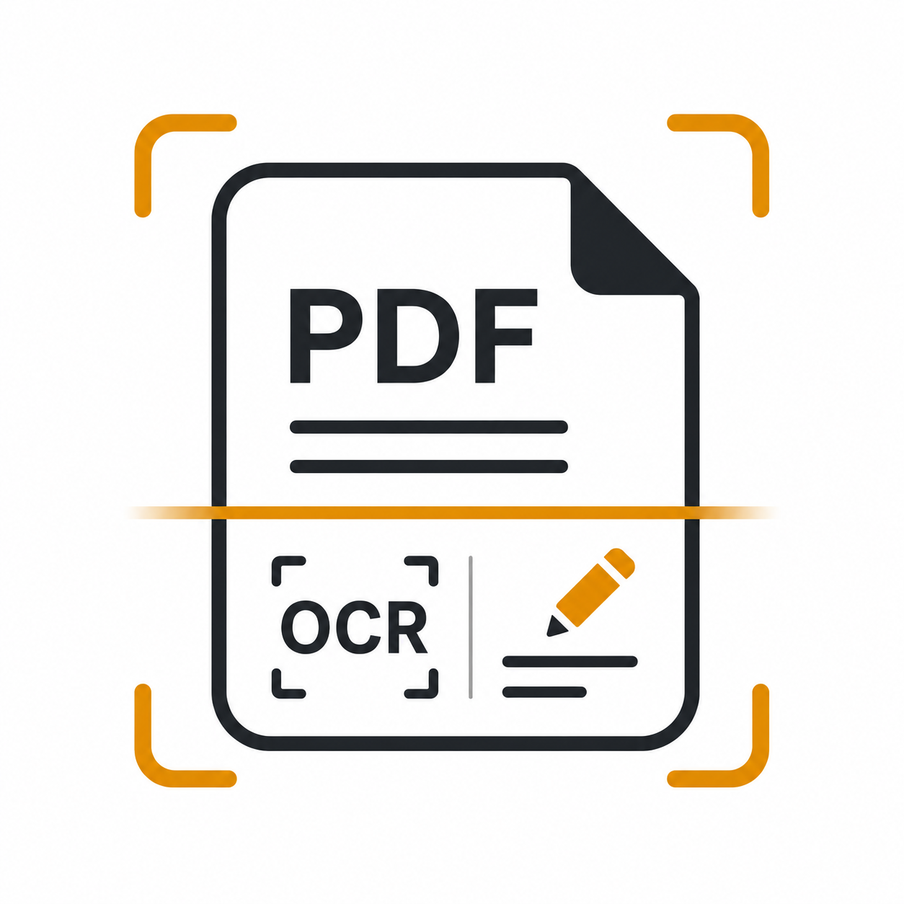

Legal · Yasal
Terms of Service
The rules and responsibilities for scanning, editing, recognizing, signing, exporting and sharing documents with PDF Scanner.
English
1. Acceptance and license
By installing or using PDF Scanner, you agree to these Terms. PerfectSky Studios grants you a personal, limited, non-exclusive, non-transferable and revocable license to use the app in accordance with applicable law and platform terms. Stop using the app if you do not accept these Terms.
2. Purpose and your documents
PDF Scanner is a general document utility for capture, organization, OCR, PDF operations, annotations, form filling, local signature placement, export, printing and sharing. You retain your rights in content you provide or create. You are responsible for having the necessary rights and permissions and for protecting confidential or regulated material.
3. Review outputs and keep backups
Camera capture, edge detection, OCR, compression, page operations and other automated processing can make mistakes. Review page order, crop, recognized text, form values, signatures, redactions and every exported result before relying on or distributing it. Keep independent backups of important source documents and outputs.
4. Redaction, signatures and passwords
Visual whiteout is not secure redaction; use the dedicated redaction flow and verify the exported result. A drawn, photographed or imported signature is a visual mark, not a certificate-based cryptographic digital signature, identity check or guarantee of legal validity. Keep passwords safe; a forgotten password may make a protected PDF inaccessible.
5. Acceptable use
Do not use the app to violate law; infringe copyright, privacy or other rights; forge identity or authorization; conceal unlawful conduct; bypass access controls; distribute malicious or unlawful content; or misrepresent a document's authenticity, ownership or legal effect. You are responsible for the content you capture, edit, save, open or share.
6. Advertising and third-party services
The app may use Google Mobile Ads, UMP, ML Kit, Google Play services and Android system components and may open a camera, file picker, sharing, printing, browser, Play Store or external reader surface. Their own terms, policies, availability and device requirements apply. Advertising is also governed by the Advertising Policy and information handling by the Privacy Policy.
7. Availability and disclaimer
The app is provided on an “as is” and “as available” basis to the extent permitted by law. PerfectSky Studios does not guarantee uninterrupted operation or compatibility with every camera, PDF variant, font, form, encryption method, provider, printer or reader. The app is not legal, financial, medical, archival, compliance or identity-verification advice.
8. Limitation, suspension and changes
To the extent permitted by law, PerfectSky Studios is not liable for indirect or consequential loss, lost documents, failed OCR, incorrect edits, sharing choices, forgotten passwords or reliance on unreviewed output. Features may change, be suspended or discontinued. These Terms may be updated and the effective date revised; continued use after an update means acceptance of the revised Terms.
9. Contact
For legal or support questions, contact perfectskystudios@gmail.com. Do not send confidential documents, passwords or signatures through email unless specifically requested through a secure support process.
Türkçe
1. Kabul ve lisans
PDF Scanner'ı yükleyerek veya kullanarak bu Koşulları kabul edersiniz. PerfectSky Studios; uygulamayı yürürlükteki yasalara ve platform koşullarına uygun biçimde kullanmanız için kişisel, sınırlı, münhasır olmayan, devredilemez ve geri alınabilir bir lisans verir. Bu Koşulları kabul etmiyorsanız uygulamayı kullanmayı bırakın.
2. Amaç ve belgeleriniz
PDF Scanner; çekim, düzenleme, OCR, PDF işlemleri, açıklama, form doldurma, yerel imza yerleştirme, dışa aktarma, yazdırma ve paylaşım için genel amaçlı bir belge aracıdır. Sağladığınız veya oluşturduğunuz içerik üzerindeki haklarınız sizde kalır. Gerekli hak ve izinlere sahip olmaktan ve gizli ya da düzenlemeye tabi içeriği korumaktan siz sorumlusunuz.
3. Çıktıları inceleyin ve yedek tutun
Kamera çekimi, kenar algılama, OCR, sıkıştırma, sayfa işlemleri ve diğer otomatik işlemler hata yapabilir. Sayfa sırasını, kırpmayı, tanınan metni, form değerlerini, imzaları, karartmaları ve dışa aktarılan her sonucu kullanmadan veya dağıtmadan önce inceleyin. Önemli kaynak belge ve çıktıların bağımsız yedeklerini tutun.
4. Karartma, imzalar ve parolalar
Görsel beyazla kapatma güvenli karartma değildir; özel karartma akışını kullanın ve dışa aktarılan sonucu doğrulayın. Çizilen, fotoğraflanan veya içe aktarılan imza görsel bir işarettir; sertifika tabanlı kriptografik dijital imza, kimlik kontrolü veya hukuki geçerlilik garantisi değildir. Parolaları güvenli tutun; unutulan parola korumalı PDF'yi erişilemez hâle getirebilir.
5. Kabul edilebilir kullanım
Uygulamayı hukuku ihlal etmek; telif, gizlilik veya diğer hakları çiğnemek; kimlik ya da yetki sahteciliği yapmak; yasa dışı davranışı gizlemek; erişim kontrollerini aşmak; zararlı veya yasa dışı içerik dağıtmak ya da belgenin gerçekliğini, sahipliğini veya hukuki etkisini yanlış göstermek için kullanmayın. Çektiğiniz, düzenlediğiniz, kaydettiğiniz, açtığınız veya paylaştığınız içerikten siz sorumlusunuz.
6. Reklamlar ve üçüncü taraf hizmetleri
Uygulama Google Mobile Ads, UMP, ML Kit, Google Play hizmetleri ve Android sistem bileşenlerini kullanabilir; kamera, dosya seçici, paylaşım, yazdırma, tarayıcı, Play Store veya harici okuyucu ekranı açabilir. Bunların kendi koşulları, politikaları, kullanılabilirliği ve cihaz gereksinimleri geçerlidir. Reklamlar ayrıca Reklam Politikasına, bilgi işleme ise Gizlilik Politikasına tabidir.
7. Kullanılabilirlik ve sorumluluk reddi
Uygulama, yasaların izin verdiği ölçüde “olduğu gibi” ve “mevcut haliyle” sunulur. PerfectSky Studios kesintisiz çalışma veya her kamera, PDF çeşidi, yazı tipi, form, şifreleme yöntemi, sağlayıcı, yazıcı ya da okuyucuyla uyumluluk garanti etmez. Uygulama hukuki, finansal, tıbbi, arşivsel, mevzuata uyum veya kimlik doğrulama danışmanlığı değildir.
8. Sınırlama, askıya alma ve değişiklikler
Yasaların izin verdiği ölçüde PerfectSky Studios; dolaylı veya sonuçsal kayıplardan, kaybolan belgelerden, hatalı OCR'den, yanlış düzenlemelerden, paylaşım tercihlerinden, unutulan parolalardan veya incelenmemiş çıktıya güvenilmesinden sorumlu değildir. Özellikler değiştirilebilir, askıya alınabilir veya sonlandırılabilir. Bu Koşullar ve yürürlük tarihi güncellenebilir; güncellemeden sonra kullanıma devam etmek yeni Koşulların kabulü anlamına gelir.
9. İletişim
Yasal veya destek soruları için perfectskystudios@gmail.com adresine yazın. Güvenli bir destek sürecinde özellikle istenmedikçe e-postayla gizli belge, parola veya imza göndermeyin.